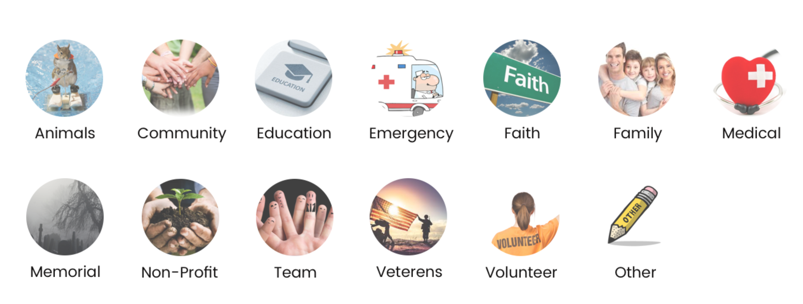
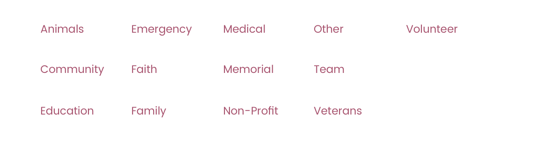
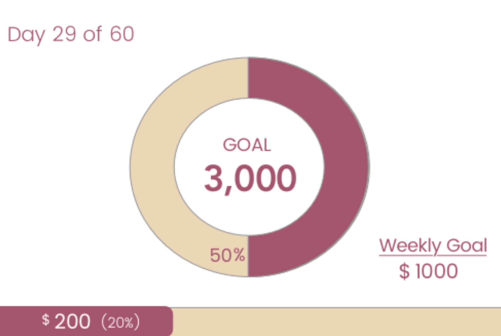
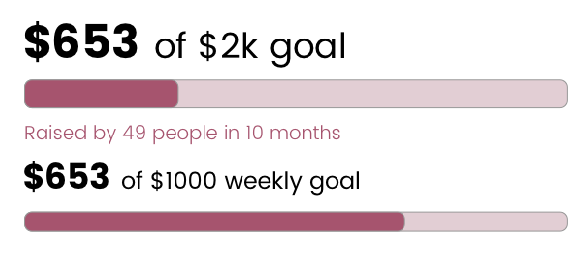

Profile Page

Open Hand was an opportunity for me to explore branding and developing a crowdfunding website. I worked around the central idea of how comfortable a user feels giving through a site.
The problem isn’t giving. The problem is how to give. Most people have the desire to help others but they are held back by their experiences with sites that do not appear trustworthy and are difficult to navigate. I set out to create a crowdfunding site that users could trust and use with ease.
I needed a website that elderly people with means could trust. Through user surveys I was able to discover that the elderly seemed to be the most eligible to give but the biggest hindrance to their generosity was a lack of trust for the website. On the other side of the spectrum I had younger people who couldn’t give large sums of money but wanted a solution where they could give small amounts of money on a regular basis. So my website needed to be agile enough to accommodate the younger and older generations.
I was less interested in promoting consumerism and more interested in connecting people. I know many elderly people who are very generous but limited in their options because of their fear of the internet. Being a UX/UI Designer, I set out to see if I could solve this issue.
The first thing I did was create surveys to identify areas I could improve to build trust. I discovered that it’s valuable to have detailed profile pages that include photos, bios, and donations from others. It's also important to have reviews, endorsements, and financial records readily available.
From there I completed a SWOT analyses of my competitors to help determine the direction of my design and how my competitors approached these problems. GoFundMe, my main competitor, used a simple interface with a profile section to build trust so I knew I needed something similar. I went through many iterations with my pages, using expert feedback and my competitors, to design a practical layout that would be credible.
I originally wanted to apply happy, bright colors to the website to provide a more jubilant tone. My user feedback, however, quickly nixed my first choices and led to a more conservative selection. With the site’s logo, I wanted something that would easily convey a sense of giving. Naturally, I chose a hand to be the centerpiece.
Originally, I had multiple icons representing the various categories that users could browse on the home page. These icons were bulky and distracting though. Per expert feedback, I removed them and just simplified by listing the category names. The result was much more visually coherent.
User Feedback: Too Busy
Revision
The initial profile page lacked any ability to monitor comments which I realized quickly would be very important if I wanted to have a credible site. I gave users the ability to report inappropriate comments and the profile owner could delete comments.
Profile Page
I was also worried about my charts being confusing with my colors and layouts and I decided to simplify the design to make it easier for the user to process.
User Feedback of Progress Meter: Over Complicated
Revision
To address the younger generation's need to give smaller, potentially reoccuring, donations, I added an option in the campaign that would allow users to give a specified amount on a reoccuring basis or as a one-time donation
To build trust, I incorporated a few different features. For the financial aspect I provided an intuitive way to link banking information with confirmation screens and indicators that would allow users to know things were working as they should.
Once logged in users can also view a history of their donations so they can keep record for tax or personal reasons. The purpose of this feature was to give added peace of mind through the process.
What worked? I created a website that had all the necessary information in order to donate and even donate on a recurring basis. My profile page provided a friendly environment to become acquainted with someone in need. Also my browsing navigation was intuitive.
What didn't work? Branding wasn’t too strong because more people ended up associating my hand logo with a signal to stop. Also the scroll-down donation page was offsetting to some, coming across as too laborious to finish.
What were the doubts going into the project? I wasn't sure how to balance a platform that would appeal to both the young and elderly.
Any surprises? I was most surprised when looking back on the project to see how much time I could have saved if I had committed more time to research in the initial stages. The most streamlined part of my project came when I opened my blinders and looked at what users were saying and how other sites solved similar issues, which can be most readily seen in my profile page and browse page.
What would you have done differently if given more time? I would have definitely conducted more research not only through user surveys but also through analyzing my competition. I spent too much time working in isolation and should have embraced the flux user opinion and tried methods. I also would have kept more project artifacts to document the project’s evolution -too many artifacts were saved over.
Learning Lessons: Since this project required more information to be displayed at once, I refined my understanding of information hierarchy, which began to show itself most acutely in the last two flows I developed, my browse flow and profile page. Learning how to guide a user’s attention through areas and sub-areas that held components of components was a welcome challenge.